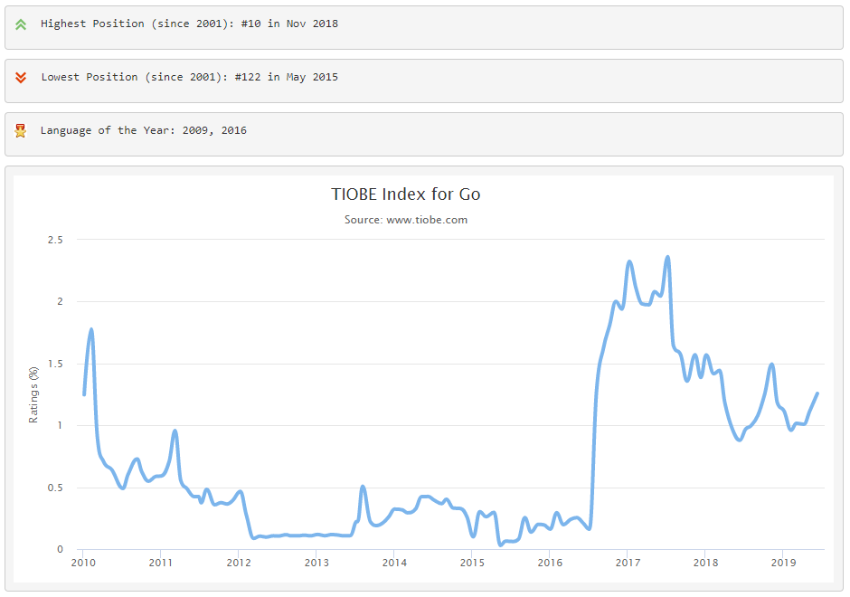

comp.lang.*
om konseptet..
comp.lang.go
agenda
Hvem er jeg?

GO
- Designed at Google, 2007/2009/2012
- Statically typed
- Syntactically similar to C
- .. but memory safe, garbage collected, structural typing
- CSP-style concurrency (channels and go-routines)

Some stuff written in Go
- Docker - tools for deploying Linux containers
- Kubernetes - container management system
- Etcd - distributed key value store
- InfluxDB - time series database
- Prometheus - monitoring system and time series database
- Terraform - infrastructure as declerative code
- Google Chrome - rewritten in Go
- Also used at Uber, Netflix, Dropbox, Twitter, Twitch, etc..

Made by Legends!
"The three of us got together and decided that we hated C++."
-
Ken Thompson
Unix, B, regular expressions, ed, UTF-8, computer chess. -
Rob Pike
Unix team, first windowing system for Unix, UTF-8 -
Robert Griesemer
V8 engine, Java HotSpot, Strongtalk
Philosophy
- Simple / small (lack inheritance, generics, exceptions, and package management (for now))
- Only one way to do anything / highly opinionated
- Nice tooling and real write once, run everywhere
- Optimized for programmer productivity in an era of multicore, networked machines and large codebases
- Optimized for junior developers??
Hello world
package main
import "fmt"
func main() {
fmt.Println("Hello, world")
}